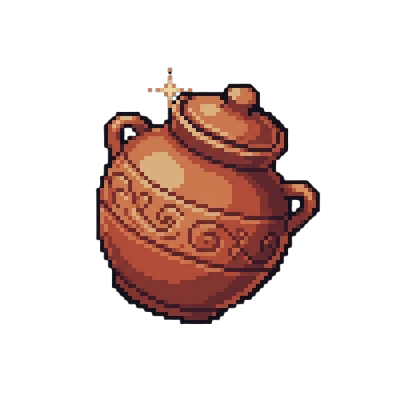

Ensiklopedia Karya
7 Mahakarya yang Harus Kamu Temukan
Inilah ketujuh warisan budaya Indonesia yang tersembunyi di dalam arena candi. Setiap benda memiliki jiwa, sejarah, dan nilai filosofis tinggi.
Asal: Kerajaan Majapahit, Jawa
Keris Pamor Luk-9
Pusaka senjata adiluhung dengan bilah berkeluk 9 yang melambangkan kesempurnaan dan ajaran Wali Sanga. Ditempa dari lipatan baja meteorit pilihan oleh sang empu keraton.

Karya Keramik
Asal: Singhasari, Jawa Timur
Guci Celadon Kuno
Artefak keramik berglasir halus dari abad ke-13 yang menjadi bukti sejarah gemilangnya jalur sutra maritim dan diplomasi perniagaan Nusantara dengan Asia Timur.
Instrumen Musik
Asal: Yogyakarta & Surakarta
Kendang Ageng Gamelan
Pemimpin irama (pamurba wirama) dalam ansambel gamelan Jawa. Memandu tempo nada dan dinamika iringan tari sakral keraton dengan harmoni bunyi yang khas.
Asal: Tanah Pasundan, Jawa Barat
Angklung Bambu Melodi
Alat musik bambu bernada ganda yang dibunyikan dengan digoyangkan. Menjadi simbol kebersamaan, gotong royong, dan keselarasan masyarakat Sunda dengan alam.
Asal: Pesisir Jawa & Betawi
Kebaya Encim Bordir
Mahakarya busana perempuan Nusantara hasil akulturasi budaya Tionghoa Peranakan dan Jawa pesisir dengan ornamen sulaman kerancang halus nan anggun.
Asal: Keraton Mataram, Jawa
Kain Batik Parang Rusak
Motif batik tertua berupa jajaran ombak karang laut selatan yang melambangkan keteguhan pantang menyerah serta pertarungan batin manusia melawan hawa nafsu.
Asal: Ubud, Pulau Dewata Bali
Asbak Ukir Kayu Suar
Karya pahatan tangan dari kayu suar berurat tegas yang dihiasi motif flora Bali sebagai simbol penghormatan kepada keindahan dan kelestarian alam semesta.